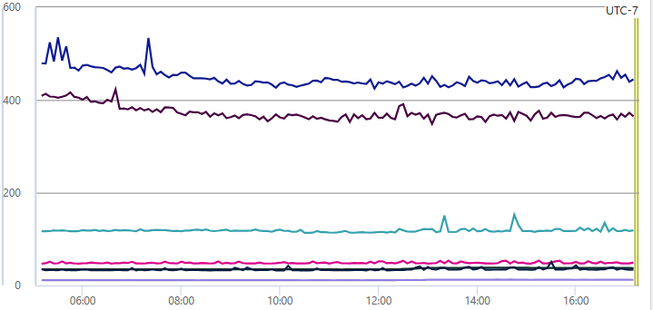

TL;DR: I am a software engineer working on a read optimized service. I will share some of the tradeoffs we made in the design of the service. I will also share some of the incidents we dealed with throughout the years. I hope this will be a good read for you.
Disclaimer: I might not know the context of the design decisions, they were made by the previous owners. I am just sharing my thoughts on the tradeoffs.
As of today (Jun 30 23), I have joined my current team for 1.5 years. The team is quite different from others I have worked with so far. That is, we own services and components which are relatively sparse. In contrast, in my previous team, we have a system with multiple closely related microservices. Data flows in one direction, and upstream and downstream contracts are well defined. Work planning was easy, and collaboration is encouraged. With my current team's ownership, it feels natural to silo team members into different areas of expertise. And so, we adopt this ownership model. This punishes collaboration with overhead costs to get familiar with other areas. This is not to say that collaboration is not encouraged, but it is not as easy as it was before. I wonder which settings is more common in the industry. I would love to hear your thoughts.
As part of this ownership model, I was assigned to work on a service. The previous owner left the company shortly after. He did his best to convey the duties and responsibilities, but I still think the transition could have been better planned, maybe a management problem. My boss was supportive, and didn't push me too much. I did prefer to have a more hand-holding experience, but there's merit in learning things through diving the code and reference the unstructured/halfbaked documents. One of the fortunate things is that the difficult part of this service is the scaling, and not business logic. The business logic is relatively simple, it's a CRUD store! The scaling part is the interesting part, and it's somewhat my bread and butter. I spent 2 years with the previous team working on scaling problems. I am still not the expert, but I did learn a lot through my mentor and I am grateful for that.
As aforementioned, it's a CRUD store. I should probably stop at that without going too much into the business. By nature, it's read-heavy, about 2000 query per second globally. The p99 latency on the service is typically sub 50ms.

I think that was quite impressive. There are a few design decisions that went into this distributed service system. I will go through them one by one.
There are x regions, and in each, there are y hosts. All hosts are behind a regional traffic manager based on performance.
NoSql, globally replicated DB, but not sharded.
Store a copy of the DB in-mem cache. Upon handling read requests, only query the cache, not the underlying datastore.
With all that said, let's dive into the challenges. I will write this part in the chronological order of the incidents my team dealed with throughout the years.
There was a surge in traffic, this triggered our CPU usage alert. We horizontally scaled out the service, meaning add more instances to the region where the alarm is triggered.
Now CPU usage drops, but we were hit with another problem. We started to see 429 Too many requests error from the underlying database. The problem with scaling out services, in my opinion, is scaling down is sticky. If there's no problem, maybe don't touch it" mindset.
Followed is the fan-out effect. We have many hosts querying the same global DB instance. So the DB became the bottleneck. Lucky for us, we have not reached the limit of scaling out the DB. We only reached the capped capacity, and we can increase this cap. Today, the DB alone costs more money in a month than what I get paid in a year. I feel unjust, but who am I to complain. Maybe it's a common practice in the industry.
Maybe we need a smarter solution to CPU usage problem.
The larger organization is focusing on improving the reliability of services. That is, we desire a high reliability metric with commitment in terms of how many 9s we want to achieve. For example, with 4 9s being 99.99% reliable. We have no problem achieving this metric for the service. As long as there is no crash, the service will return some or nothing from the cache. Note that, cache miss will not result in drop in reliability.
It is eventual consistent, so it may take some time.
team: "How long ago did you create the record"
client: "long enough"
We have not commited to a SLA for the eventual consistency. However, if it's in the hours, without saying too much about the business logic, let's just say it's not acceptable.
The interval set for cache invalidation is typically within 10 seconds. The last scaling out came to haunt us. There was a surge in write traffic, with each write, we amplified the traffic to our DB. To the point 80% of traffic to the DB was throttled.
For each throttled request, we retry, but without jitter, meaning after a fix period, all hosts pound the DB on beat. This is a classic thundering herd problem. If leave as is, maybe it will take a few days for hosts to digest the change. However, records that exceeded the max retry attempt will be "missing".
A good old restart. Hah I learned this trick from my father when I was 5. It works this time as well. When restarting the host, the queue of changed records is flushed. The host will start with a clean slate. The cache will be repopulated with the latest data from the DB.
We need to be mindful about the fan-out effect and the thundering herd problem. After the incident, maybe we should add jitter for retrying. I also changed the queue of changed records to be a set. This way, we can avoid duplicate work, e.g. if record A is changed twice, we only need to apply the change once.
A lot of the times, incidents for this service were resulted from the increase in write requests without sufficient scaling out of either the service host or the underlying datastore. This service, as I mentioned, is read-heavy. The design decisions were made with this in mind and thus the tradeoffs is to sacrifice write performance for read performance. This is a good tradeoff, but it's not without its own problems.
They are preventable, or at the least, there won't be an incident if we know of the write traffic surge before hand and scale out the bottlenecks accordingly.
team: "We are going to launch a new feature, it will increase the write traffic by 10x"
my team: "ok"
However, the communication is not always this clear. Sometimes, we are not aware of the new feature. Sometimes, we are aware, but we don't know the impact. Sometimes, we are aware, but we don't know how much it will increase the traffic. Sometimes, we are aware, but we don't know if it's a one time thing or a recurring thing. Sometimes, we are aware, but we don't know if it's a one time thing or a recurring thing. Sometimes, we are aware, but we don't know if it's a one time thing or a recurring thing. Oops, looks like I am repeating myself. You get the idea.
In my opinion, for my team, we should establish clear SLAs with the clients. If there was expected increase in traffic, it should be discussed laterally.
I voiced it out a couple of times but never followed through. Sorry boss! For some team, I'm building up the connection, hopefully there will be less surprises in the future.